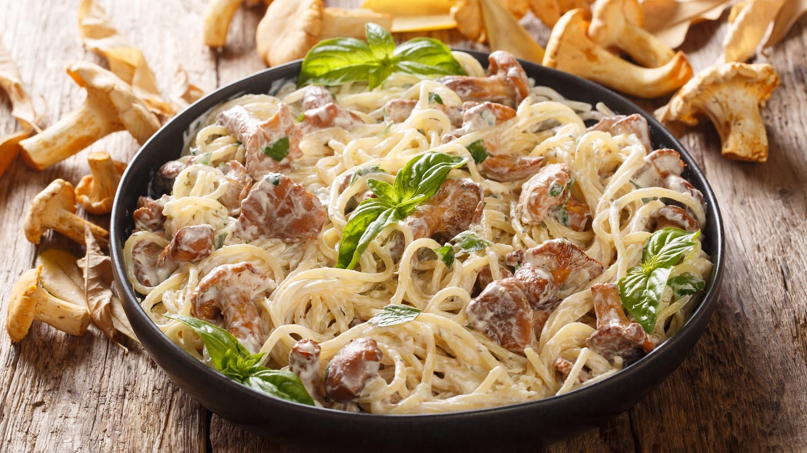

Tuna-Spaghetti
Home

Description
This tuna spaghetti recipe is a simple pasta dish that's perfect for a quick dinner!
Ingridients:
- Pan
- Spaghetti
- Tuna can
- Black pepper
- Yellow Kurkuma powder
Steps:
- Add water in the pan.
- Turn the heat up and wait until it starts boiling.
- Add the Spaghetti.
- Add a solid amount of salt.
- Let it cook for 10-15 minutes.
- After that pour the Spaghetti in a colander to drain the water.
(This will free up the pan for preparing the Tuna.)
- Lower the heat then add in the Tuna including its Oil.
- Add a solid amount of black pepper and the yellow kurkuma powder
and let it cook for 3-4 minutes.
- After that pour the Spaghetti on the cooking Tuna and mix it together.
(Of course you can turn off the heat while you mix it.)
*optional:
- Add a great amount of any type of mayonnaise you prefer
- Add herb cream cheese (Recommended)
That's it Enjoy!